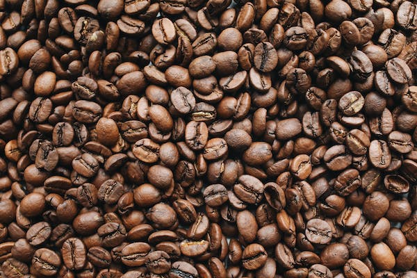
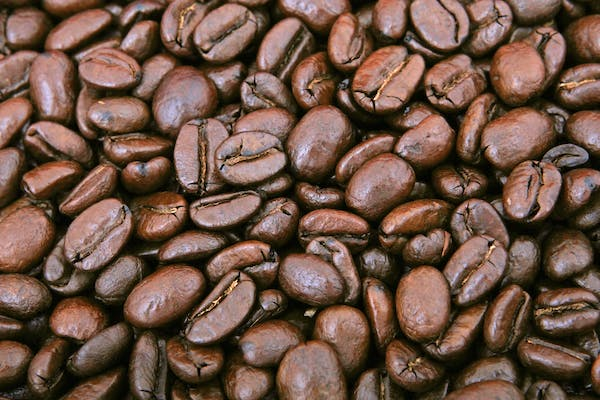
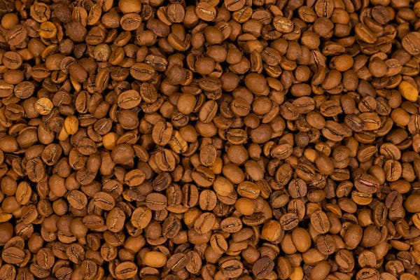

Our Passion for Perfecting Coffee
There's nothing quite like enjoying that perfect cup of coffee. Since 2000, our mission has been to provide each and every customer with just that.
We take great pride in our great-tasting coffees from around the world, featuring intense aromas and creamy textures that are sure to delight your senses. Our passion for coffee is reflected in every sip you take, brightening your days one cup at a time.
Here at Gulp Roast, we believe that each cup of coffee should be a personalized experience. That's why we take the time to prepare each order with care, ensuring that every cup is tailored to your unique tastes.
We invite you to browse our collection and stop by to try our delicious coffee for yourself. We can't wait to share our love of coffee with you, one sip at a time.
Our Coffee
All of our coffee beans are carefully selected from around the world, ensuring a rich and flavorful cup every time. We offer a wide range of blends to suit every taste, from our bold and full-bodied Columbian blends to our light and refreshing Ethiopian blends. Whether you're in the mood for a rich espresso or a smooth latte, we have the perfect cup waiting for you!

Columbian-Blended Espresso Beans
Experience the ultimate coffee indulgence with each sip of our expertly blended Columbian Espresso Beans. With their bright and clean taste and an intense burst of flavor, these full-bodied beans strike the perfect balance between delicate roasts and fruitful aromas.

Triple-Blended Coffee Beans
Our Triple-Blended Coffee Beans are a testament to our roasting expertise and careful blending. These beans go beyond just waking you up in the morning, as they leave a lasting impression on your taste buds that will keep you coming back for more. With their silky smooth texture and complex layers of flavors, there's no better way to kick off your day than with a cup of our Triple-Blended Coffee Beans.

Lightly Roasted Coffee Beans
Our Triple-Blended Coffee Beans are a testament to our roasting expertise and careful blending. These beans go beyond just waking you up in the morning, as they leave a lasting impression on your taste buds that will keep you coming back for more. With their silky smooth texture and complex layers of flavors, there's no better way to kick off your day than with a cup of our Triple-Blended Coffee Beans.
Brew at Home
Take the taste of our cozy coffee shop home with you by purchasing our freshly roasted beans!
Brew up a cup of perfection in the comfort of your own home with our premium coffee beans, available at the following locations:
- Our Coffee Shop at Fisherman's Wharf
- Our Second Location on Terry Francois Street
- Bay Area Sunday Market
- San Francisco Farmers Market